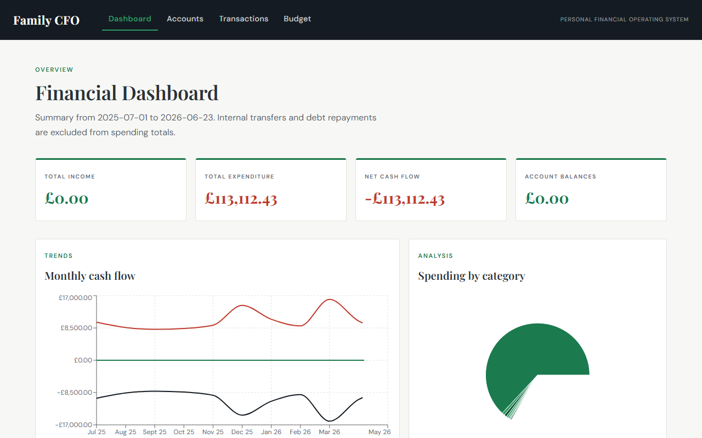
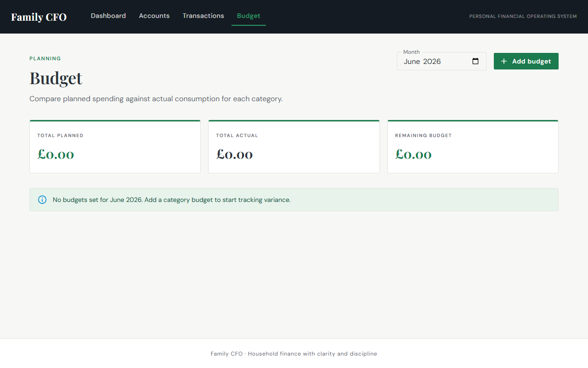

The problem
Household finances rarely live in one system. Spending sits across accounts and cards; budgets live in spreadsheets; debt and savings goals are tracked manually — if at all. Generic AI chat tools can sound helpful but don't know your accounts, your debt priorities, or your near-term obligations — so advice stays generic and trust stays low.
What it does today
Agentic Family CFO replaces the patchwork of bank apps, spreadsheets, and mental arithmetic that most households rely on. Families get a single view of income, outgoings, and what's left — and can see, category by category, whether they're on track against what they planned to spend.
The impact is practical: less time reconciling across accounts, earlier warning when spending drifts off plan, and a ledger the rest of the product can reason over — the prerequisite for advice that is grounded, not guessed.


The agentic vision
The product is designed to behave like a careful personal CFO — one that understands the household's actual position and helps answer a single question: what is the financially sensible next decision? That means more than dashboards and chat.
- Grounded advisor — natural-language questions answered using real transaction, budget, and debt context — plus a persistent household knowledge base — not generic financial trivia
- Scenario comparison — model major decisions side by side before acting: debt repayment vs liquidity, property moves, vehicle repair vs replace, career and bonus allocation
- Rules that earn trust — advice follows explicit household priorities (preserve liquidity, eliminate expensive debt first, model before major commitments) so recommendations stay auditable and consistent
- Proactive intelligence — on the roadmap: recurring-payment discovery, spending anomalies, cash-flow forecasting, and alerts when budget, liquidity, or debt risk emerges — surfacing issues and opportunities without waiting to be asked
Approach
- Build the transaction and categorisation foundation first — correct numbers before any agent speaks
- Ship cash-flow visibility and budgeting next; validate with real household use before widening scope
- Add debt analysis, then the advisor and scenario engine on top of the same operating picture
- Keep calculations and categorisation deterministic; the agent interprets and recommends — it does not invent balances or priorities
Roadmap
Delivery is phased so the system stays deployable and useful at every step:
- Live now — financial dashboard and budget management: cash-flow visibility, category analysis, planned vs actual variance
- Next — debt tracking and repayment prioritisation; AI advisor for grounded Q&A; scenario engine for life-decision comparison
- Then — property, vehicle, and career modelling modules woven into the same household picture
- Later — advanced intelligence (proactive advice, anomaly detection, forecasting) and credit-health integration for lending and liquidity decisions
Agentic Family CFO is both a live product and a reference for how 3jays ships agentic platforms — trustworthy data first, thin intelligent layer second, proactive capability when the foundation earns it.